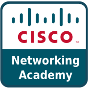

Security Operations
LearningDetection, analysis and investigation
- Security log analysis
- Threat monitoring
- Incident investigation
- Wazuh
Open to entry-level SOC analyst roles
IT student building toward a SOC analyst career
Fourth-year Information Technology student at the University of Cabuyao with a background in Java, web development and databases, currently building hands-on skills in security log analysis, threat monitoring and SIEM tools.

Detection, analysis and investigation
Core concepts I'm building on
Building and connecting applications
Storing and managing application data
Hands-on SOC labs and write-ups will be added here as I complete them. Each one will be marked completed, in progress or planned.
Examine sample phishing emails: read the headers, check links and attachments, and list the indicators found.
Review Windows security events to spot failed logins and unusual activity, and note which ones deserve escalation.
Set up a Wazuh server and one monitored endpoint in a home lab, then investigate the alerts generated by simulated failed logins.
Add input validation and password hashing to a login system built with Java and Supabase.
– Present
University of Cabuyao (Pamantasan ng Cabuyao)
–
Batangas State University
–
University of Cabuyao (Pamantasan ng Cabuyao)
I'm a fourth-year Information Technology student with a background in Java and object-oriented programming, web and application development, and frontend-backend API integration. I have manage data with MySQL and Supabase.
I'm aiming for a role as a SOC analyst. Alongside my coursework, I'm building skills in threat monitoring, security log analysis, incident investigation and SIEM tools, as well as secure application development. My development background helps me understand how the systems I'd be defending are built.
This portfolio will grow as I complete hands-on labs. Each one is marked as completed, in progress or planned, so what you see here reflects the work I've actually done.
I'm open to entry-level SOC analyst opportunities. Email is the best way to reach me.